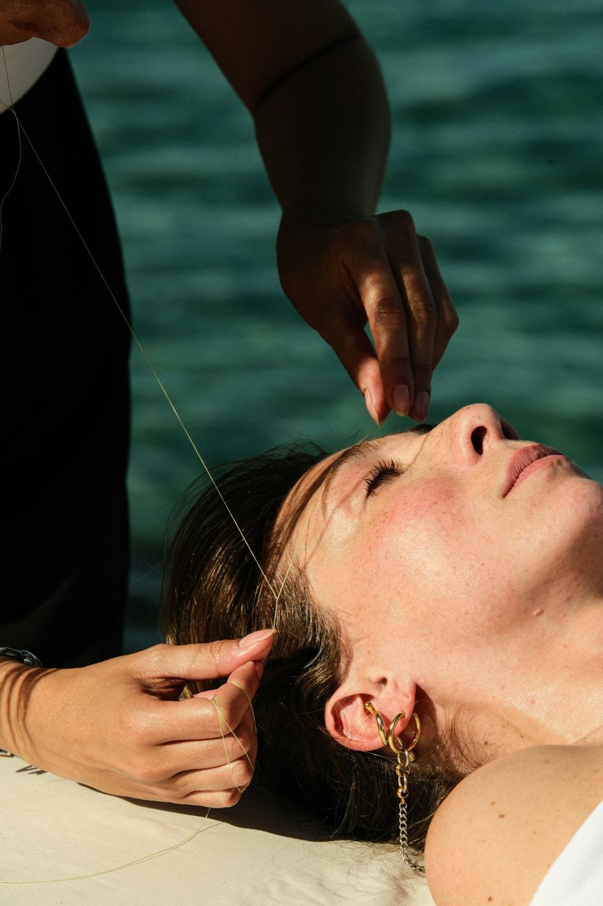

Reconnexion
[ 4 séances ]Un chemin en quatre séances pour faire le point quand on tourne en rond. S’appuyant sur des techniques issues de la PNL, on pose les bonnes questions, une à une, jusqu’à retrouver une direction qui te ressemble.
Premier échange : ReconnexionBienfaits et à qui ça s’adresse
Les bienfaits
- Y voir plus clair dans tes envies et tes priorités
- Lever le flou mental et sortir du « tourner en rond »
- Faire des choix avec plus de confiance
- Passer à l’action, pas à pas
C’est pour toi si…
tu hésites, tu tournes en rond, tu désires retrouver ta direction et passer à l’action
Idéal si…
tu es à la croisée des chemins : lever le flou mental, écouter tes envies profondes, faire des choix qui te ressemblent.